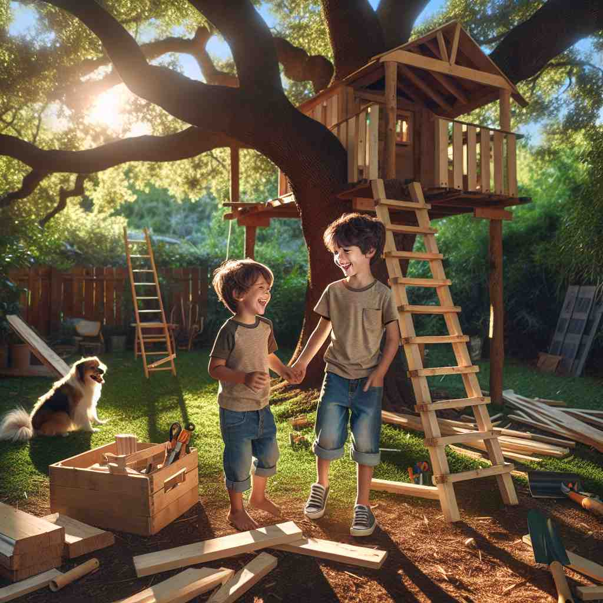

💬 He loves to play games with my younger brother.

💬 The older brother helps his younger brother with homework.

💬 I am playing with my brother in the backyard.
💬 I am flying a kite with my younger brother.
🔈 ['brʌðə]
🗝️ n. a male person who has the same parents as you
🖼️ 在一个温馨的家庭聚会上，你和你的亲兄弟一起坐在沙发上，翻看小时候的照片，相互打趣着对方的幼时模样，这个场景完美体现了'brother'作为有共同父母的男性的含义。
🔍 从'brother'的核心含义'有共同父母的男性'出发，我们可以看到它如何扩展到半血缘关系、比喻性的亲密朋友关系，以及组织成员间的关系。无论是血缘、情感还是社会关系，'brother'都体现了一种亲密、平等的男性间联系。记忆时，可以想象一个家庭树，从中心的亲兄弟逐渐向外扩展到更广泛的'兄弟'关系。
💬 He loves to play games with my younger brother.
💬 The older brother helps his younger brother with homework.
💬 I am playing with my brother in the backyard.
💬 I am flying a kite with my younger brother.
🌳 该词源自古英语 'brōþor'，表示 '兄弟'，没有明显的前缀或后缀。
💡 记忆 'brother' 可以联想 '兄弟' 一词，并且在词形和发音上与其近似。同时，可以想到兄弟之间的情感联系，以加深理解。
🗝️ n. a male who shares one parent with you
🖼️ 一个春日的下午，你和同父异母的兄弟在公园里踢足球。尽管父母各异，但彼此的笑声和默契让这个场景展现了'brother'作为共有一个父（或母）的男性的定义。
💬 They have different mothers but the same father, so they are half-brothers.
❓ 扩展核心含义，包括同父异母或同母异父的兄弟
🗝️ n. a close male friend
🖼️ 在一个热闹的咖啡馆里，你和一个认识多年的朋友面对面而坐。你们用'brother'来称呼彼此，因为多年陪伴早已让你们的友情如同亲兄弟一般。
💬 We've been friends for so long, he's like a brother to me.
❓ 比喻用法，将亲密朋友比作兄弟
🗝️ n. a fellow member of an organization, especially a religious one
🖼️ 在一间宏伟的教堂中，许多成员聚集在一起。你与一群修士一起聆听讲道，他们彼此称呼为'brother'，表现了'brother'作为宗教组织中同伴成员的含义。
💬 The monks greeted each other as 'Brother'.
❓ 将组织成员间的关系比作兄弟关系
🗝️ n. a man or boy in relation to other children of his parents
🖼️ 在一个喧闹的家庭晚餐中，父母叫来所有孩子吃饭。你的兄弟，作为其他兄弟姐妹的一部分，也在父母的视线中。这个场景描绘了'brother'作为父母其他孩子的关系角色。
💬 In their family, there are two sisters and one brother.
❓ 强调家庭关系中的男性角色
🗝️ n. used as a form of address by one man to another
🖼️ 在汽修车间，两位技师站在修理台旁，互相讨论车辆问题。他们轻松地彼此称呼对方为'brother'，这是一种友好的男性之间的称呼。
💬 Hey, brother, can you help me with directions?
❓ 将陌生男性比作兄弟，表示友好